この記事はBanggoodの提供でお届けします。
以前紹介したようにこのブログはBanggoodと提携させていただいており、今回紹介するEasythreed®K5からいただいたものとなります。Easythreed®K5についてはBanggoodから紹介されましたが、自分も面白い製品であると感じたためこのレビューを引き受けたため、Banggoodが無理やりこの商品を押しているわけではなく、inajobの一押しアイテム！、という感じです。）
Easythreed®K5 とは
いわゆる3Dプリンタです。
3Dプリンタもずいぶん普及して、かなり低価格のものも出てきました。そんな中でも抜きんでた安さのものを扱っているのがEasythread社の製品です。
今回紹介する「K5」というのもそんな低価格帯の3Dプリンタです。
しかし、今回この3Dプリンタを紹介しようと思った一番の理由は「かわいさ」です。
3Dプリンタが一般的になり、競合製品で市場が飽和してきたときに必要なのは、他社とは違う魅力です。
その魅力に「かわいさ」というのを選んだのがこの「K5」です。
なんというか「3Dプリンタもいよいよここまで来たか」と感じるエポックメイキングな製品だと感じています。
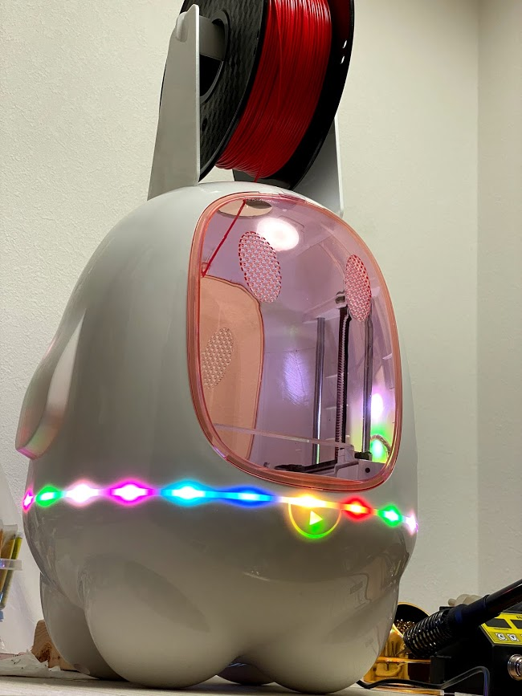
スペックは以下です
-
造形可能サイズ 80mm×80mm×100mm
- ここが安さの秘訣ですね。小さいものしか作れません。
-
Extruder温度 180-230℃
- この温度ゆえ、PLA樹脂,TPU樹脂のみ利用できます。ABS樹脂は造形できません。
-
ヒートベッド なし
- PLA樹脂しかサポートしていないので、まぁこれは無くてもそこまで困りません
-
サポートしているフィラメントの直径: 1.75mm
- 一般的な3Dプリンタと同様です
-
プリントヘッドの速度 10mm/s - 40mm/s
- ここも安さの秘訣ですが、ゆっくりしか移動しないので、比較的静かです。
-
取り外し可能なマグネット式プレート
- これはうれしい仕組みです。これが無いと3Dプリンタの生成物をベッドから剥がすのが非常に面倒です。
開封レビュー
届いたのはこのくらいの箱でした。
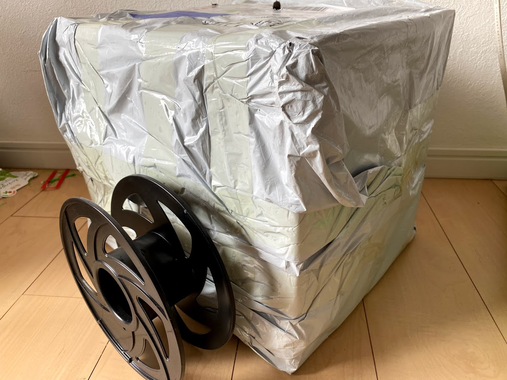
開けてみると、じゃーん！ 製品外観が印刷された段ボールが出てきました。
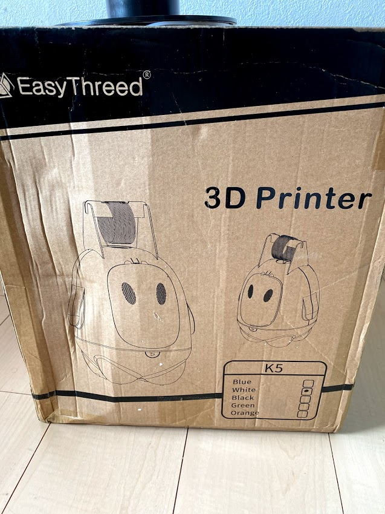
中身は発泡スチロールで梱包されており、製品も無事でした。
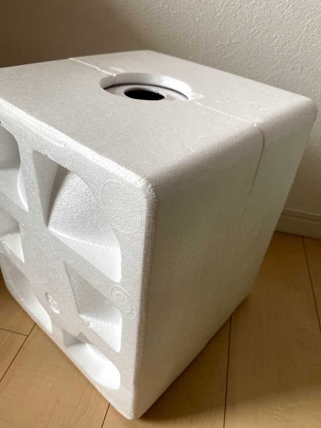
可動部分は養生テープで固定されていました。
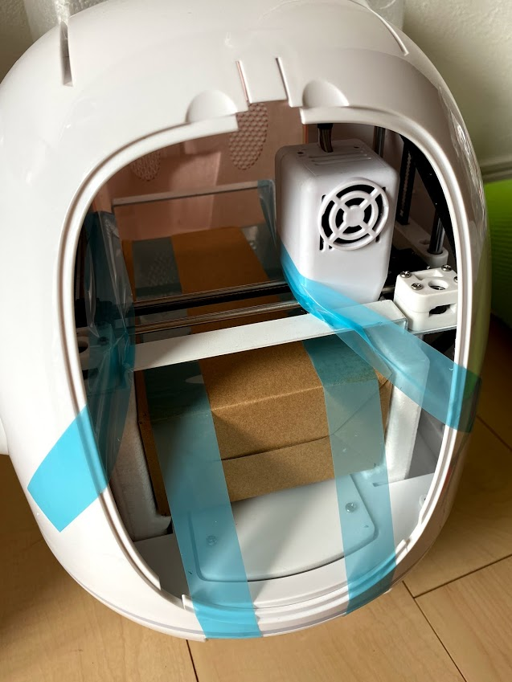
付属部品はこんな感じ
- フィラメント固定用のプラスチック部品
- 説明書
- ACアダプタ
- お試し用フィラメント（※フィラメントというのは3Dプリントの材料となる細長い形状のプラスチックです）
- USBメモリ
- ドライバー2種
- USBケーブル
- スクレイパー
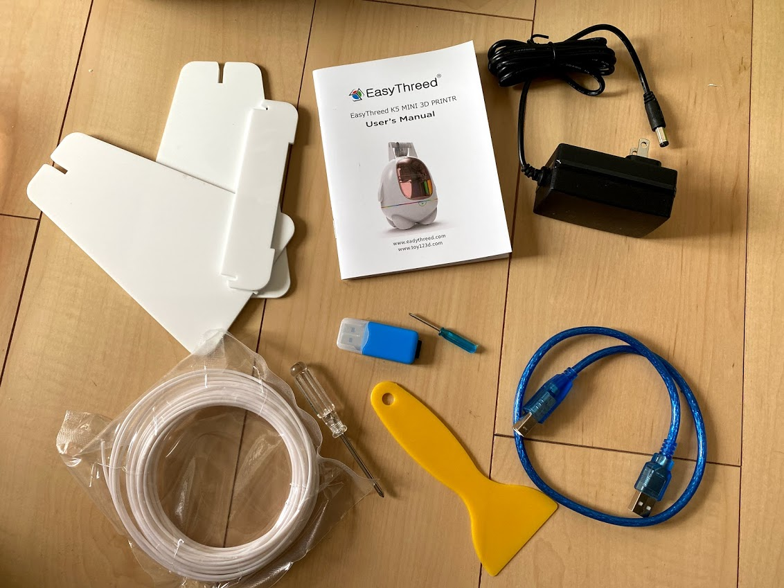
説明書は日本語のページもありました。
フィラメント固定用部品を搭載して、電源を入れるとこんな感じです。 腰回りが良い感じに光っていてSFアニメに出てきそうな宇宙人風の外観です。
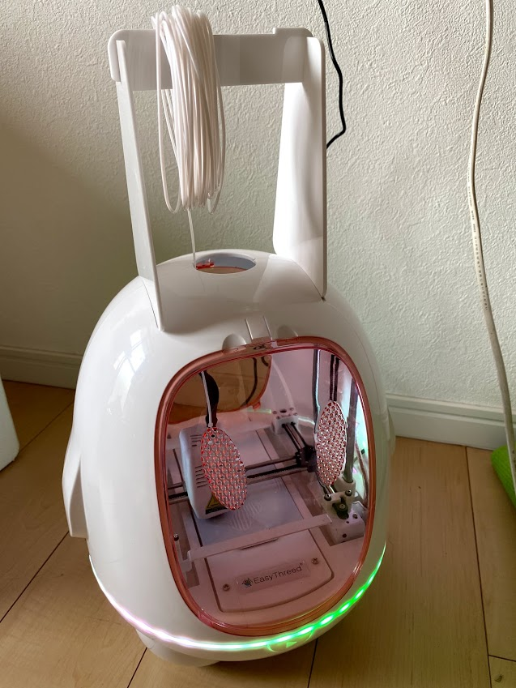
中身はこんな感じ。小さいながらも一般的な3Dプリンタと同じような構造です。
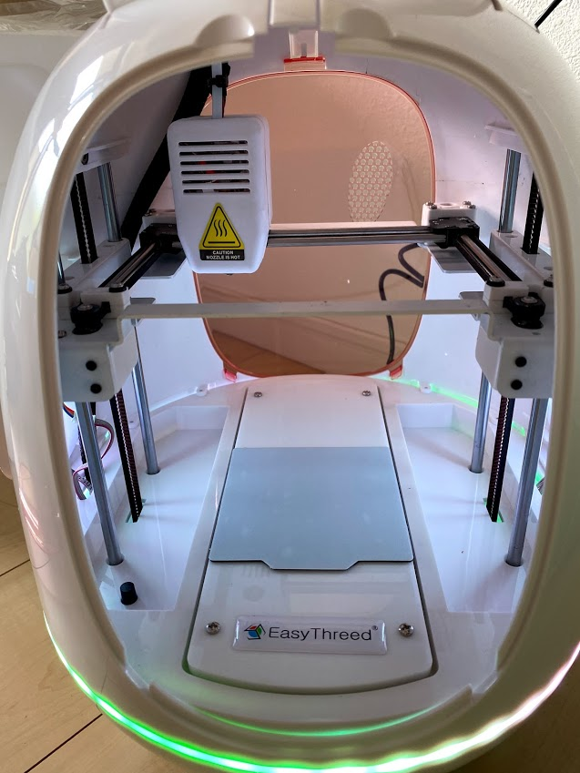
背面にはこのような端子・ボタンが並んでいます。
ACアダプタの端子、MicroSDスロット、LED点滅パターンの切り替えボタン、LEDの電源ボタン、モード切替スイッチ。
モード切替スイッチは3状態のスライドスイッチで、一番左が「FEED」、一番右が「RETRACT」、真ん中は何も書いてないですが、通常は真ん中にスライドさせておきます。
印刷してみる
フィラメントをヘッドに挿入するときにはこのモード切替スイッチを「FEED」にしてフィラメントをヘッドに突っ込みます。
しばらく待つと吐出口が加熱され、十分に加熱されると、フィラメント送りギアが回転し始め、吐出口から溶けたフィラメントがトロトロと出力されます。いいくらいに吐出されたらモード切替スイッチを真ん中に戻します。
3Dプリントをするためには、MicroSDカードにデータを保存して、K5のSDカードスロットに挿入し、コンセントをつなげます。
K5が起動したら本体下にある「再生ボタン」のようなスイッチを短く押して離します。
しばらく待つと印刷が開始されます。
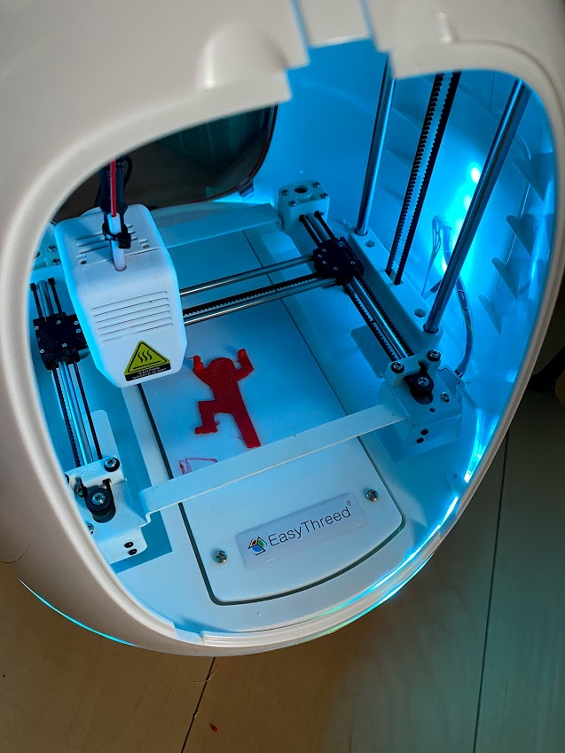
印刷が終わったら、磁石でくっついている土台を外して取り出し、土台から生成物を剥がして、完成です。
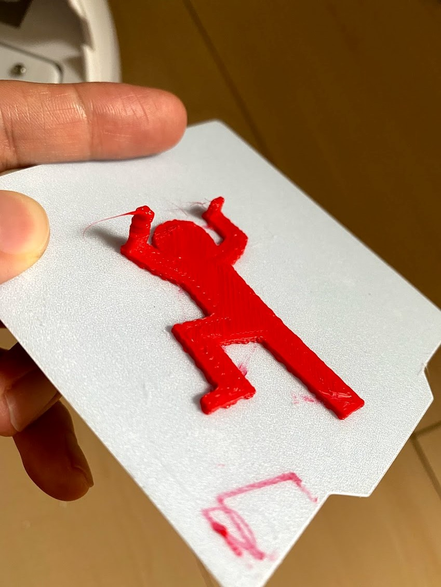
たったこれだけ！
3Dプリンタというと調整が難しいというイメージがありましたが、このK5は特に調整することなく印刷することが出来ました。
まぁ冷静に考えると調整が難しいというのは大きなものを作る際に発生しやすくなる問題で、このK5は80mm×80mmという小さな部品しか作れないという仕組み上、結構雑な調整でもそこそこのものが作れるという事のようです。
ちょっと気になったこと
どうも電源が弱いようで、印刷中に急に印刷が止まり、再開できなくなるという問題が起きることがありました。
電源をなるべく3Dプリントに使えるように、LEDを消灯して印刷をすると問題が起きなくなりました。 （たまたまかもしれませんが・・）
コントローラーボード
制御ボードはMarlinなので、一般的な3Dプリンタと同様に、STLファイルをスライサーソフトウェアでG-Codeに変換することで、K5用の3Dプリントデータを作ることが出来ます。
またUSB経由で制御もできるようです。
本家ページに3Dデータがたくさん
3Dプリンタを買って意外と困るのが「印刷したいデータが無い」という事です。 特にこのK5は造形可能サイズが小さいため、このサイズで印刷できる物、となるとさらに限られてしまいます。
しかしこのプリンタの製造元であるEasythreadの公式ページには、このプリンタで造形可能な様々な3Dデータが公開されています。
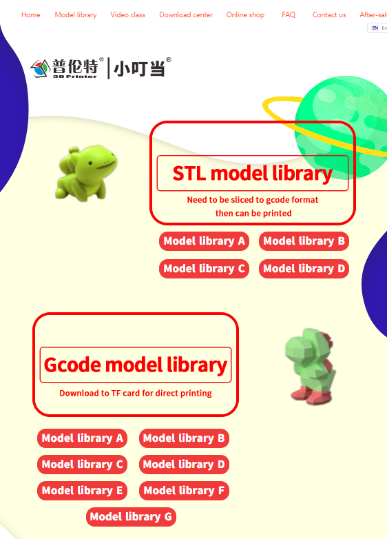
買ってしばらくは、このページにある3Dデータから面白そうなものを選んで印刷するのがよさそうです。
データはSTL形式のものとG-Code形式のものがあります。 STL形式のものはそのまま印刷できないので、適当なスライサーソフトを使ったG-Codeに変換する必要があります。
G-Code形式のデータはそのまま印刷できますが、細かい品質の設定ができないので注意が必要です。
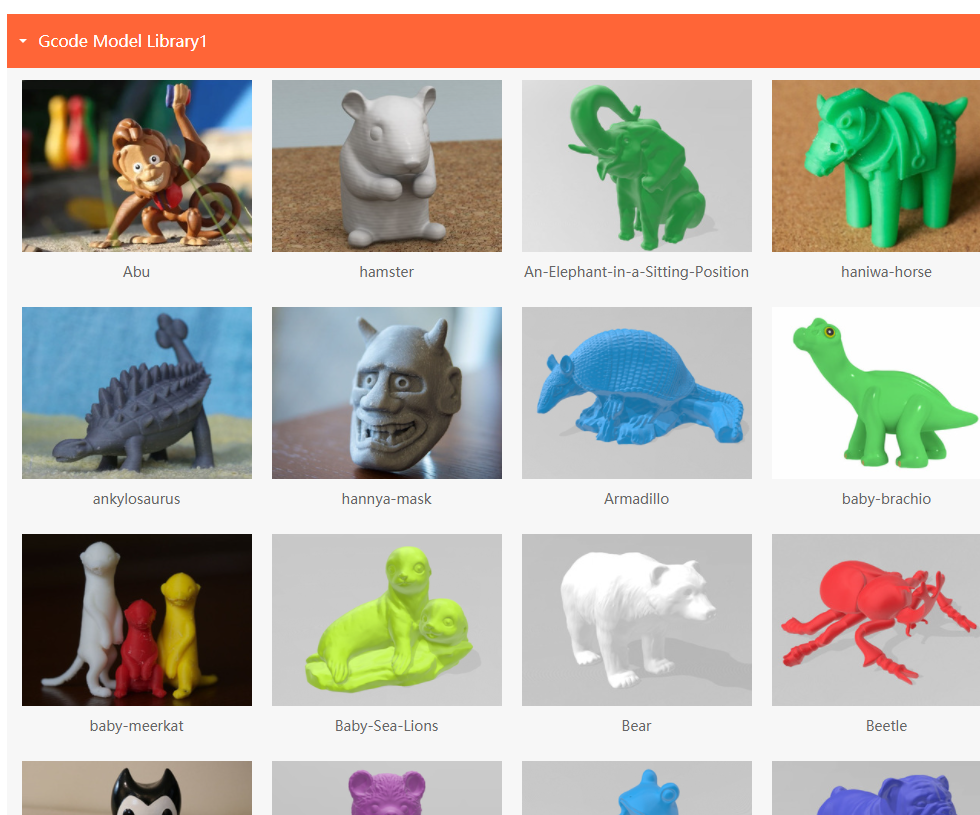
いくつか試してみたのですが、G-Code形式のデータは成果物の下に印刷補助用の「ラフト」を形成するような構造となっており、生成物がベッドに定着しないという問題が起きにくいように工夫されています。
この「ラフト」は本来、簡単に生成物から剥がせるようになっているものなのですが、どうもこのG-Codeのデータで印刷すると、剥がすことが難しいほどべったりと生成物にくっついたラフトのデータとなっています。
G-Code形式で印刷するのに慣れたら、STL形式のデータを使いお好みのスライサーソフトウェアを使って、ラフトなしで印刷するのが良いと思います。（ラフトなしでも割としっかり定着します。）
Easythreed®K5 で作成した作品達
大きさの制限があるので、作れる作品は限られますが、このような手のひらサイズの物を作ることが出来ます。
よく見かけるグネグネ動く恐竜を印刷してみた。印刷条件が違うからか可動具合が全然違うな、、https://t.co/9ZodbfMUm3#3dプリンター pic.twitter.com/psCNSiCPkw
— ina_ani@1歳児のパパ (@ina_ani) July 2, 2021
サメ型クリップ
— ina_ani@1歳児のパパ (@ina_ani) July 1, 2021
データはこちらを使わせてもらいました。https://t.co/6xPHMuq66V#3dプリンター pic.twitter.com/4U6UDriEEw
色違い君を追加#3dプリンター pic.twitter.com/WTi71tOFct
— ina_ani@1歳児のパパ (@ina_ani) July 1, 2021
まとめ
この3Dプリンタは、かなり使う人を選ぶ製品だと感じました。
なるべく安くで3Dプリンタを体験したい人には、良いと思いますが、2万5千円ほどまで出せるならもう少し良い機種が手に入りますので、どこまで安いものを選ぶか、というところですね。
かわいさ目当ての人には一押しです。3Dプリンタは部屋に置くと結構な存在感があります、それがゴツイ機械のような見た目ではなく、このようなかわいいキャラクターの形をしているというのは、インテリアとしても面白いです。そういった点でこの3Dプリンタは唯一の存在なのではないかと思います。 また、このかわいい見た目は、子供などにはウケるかもしれませんし、3Dプリンタに興味が無いような人の気を引くこともできるかもしれません。
安い3Dプリンタのつくりを研究してみたい人にも良い製品です。ステッピングモーターを廉価なものにし、造形サイズを小さく抑えることで、実用的ながら低価格を実現している、この設計力は見事だと感じました。
といったところでまぁ、興味がある人は買ってみてください。
クーポンコード
さて、ここまで紹介してきたEasythreed®K5ですが、今回Banggoodの提供という事で、$99で購入できるクーポンを頂いています。
コード： BG7fd808 (7/31まで)
Easythreed®K5をカートに入れ、チェックアウト後にこのクーポンコードを入力することで割引を受けることが出来ます。
有効期限は2021/7/31なので、買いたい方はお早めにどうぞ！（加えて、在庫に限りがあると思うのでお早目に！）
Banggoodでは、7/7 Summer Saleということで、ほかにも様々なガジェットを格安で販売しているようです。気になる人は除いてみてください。
ほかにも1万円以下の3Dプリンタのクーポンが・・・！
さらに1万円以下のEasythread社の3Dプリンタについてもクーポンを頂いています。
送料も無料なので、本当にこの値段で3Dプリンタを購入することが出来ます。
K5ほどの「かわいさ」はありませんが、カバーが無い分メンテナンスはやりやすいかもしれません。
Easythreed® K1
実は造形サイズがK5よりも20mm大きいK1です。価格もK5よりも安いです。
- クーポンコード: BG2c79cd （利用期限は2021/7/31）
- 価格: $89
- 購入はこちらから
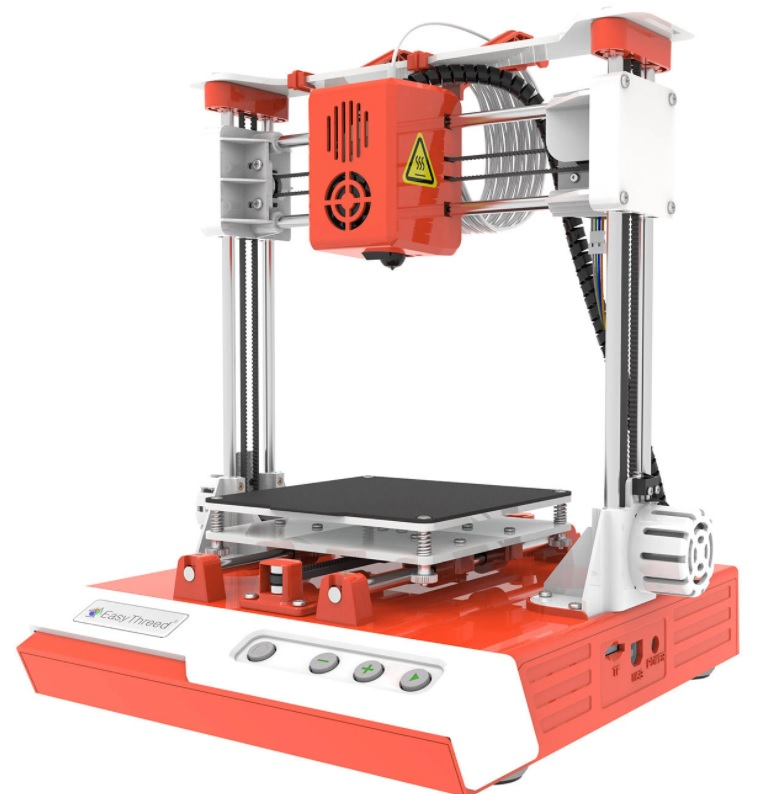
Easythreed® K7
こちらも造形サイズがK5よりも20mm大きいK7です。価格もK5よりも安いです。 Z軸が片腕なのが特徴ですね。この点でコストダウンが出来ているのかもしれません。
- クーポンコード: BGa98d12 （利用期限は2021/7/31）
- 価格: $79
- 購入はこちらから
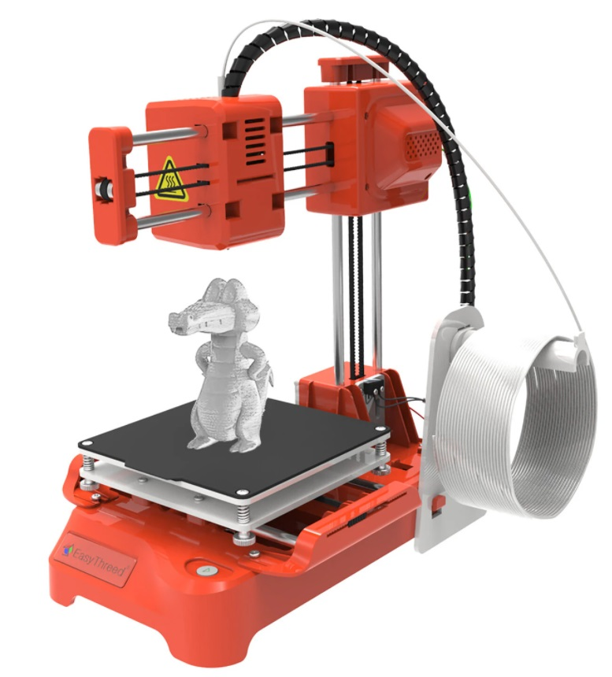

関連記事